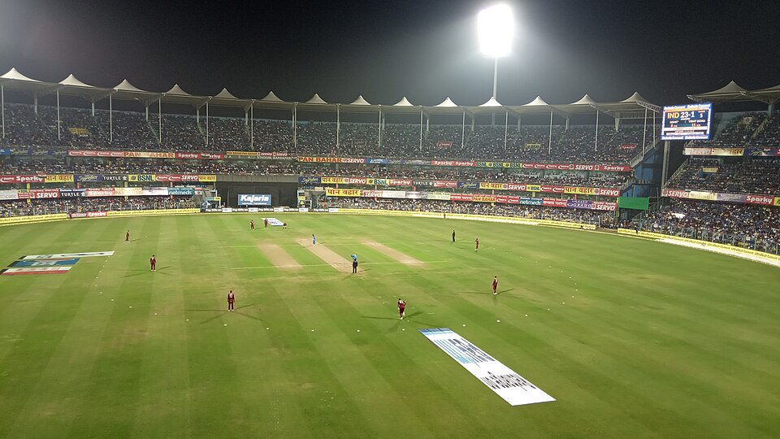

वेलिंगटन टेस्ट: भारत ने 720 रन पर घोषित की पारी, बनाई 352 रन की बढ़त
वेलिंगटन टेस्ट में भारत ने अपनी पहली पारी सात विकेट पर 720 रन बनाकर घोषित की। यह टेस्ट इतिहास में भारत का तीसरा सबसे बड़ा और न्यूजीलैंड की जमीन पर किसी भी टीम का सबसे बड़ा स्कोर है।
भारतीय क्रिकेट टीम ने वेलिंगटन टेस्ट मैच के चौथे दिन अपनी पहली पारी 720 रन के विशाल स्कोर पर घोषित कर दी। इसके साथ ही टीम के पास 352 रनों की मजबूत बढ़त हासिल हो गई है। पारी के दौरान केएल राहुल ने 136 रन और ऋषभ पंत ने 128 रन की शतकीय पारियां खेलीं। इसके अलावा यशस्वी जायसवाल ने 85, देवदत्त पडिक्कल ने 80, शुभमन गिल ने 98 और ध्रुव जुरेल ने 78 रनों का योगदान दिया।
यह टेस्ट क्रिकेट के इतिहास में भारत का तीसरा सबसे बड़ा स्कोर है। साथ ही, यह न्यूजीलैंड की धरती पर किसी भी टीम द्वारा बनाया गया सबसे बड़ा स्कोर है, जिससे भारत ने 2019 में बांग्लादेश के खिलाफ न्यूजीलैंड के 715 रनों के रिकॉर्ड को पीछे छोड़ दिया है। टेस्ट क्रिकेट में भारत ने अब तक पांच बार 700 से अधिक का स्कोर बनाया है।
भारतीय टीम अब न्यूजीलैंड को कम स्कोर पर रोककर पारी के अंतर से मुकाबला जीतने का प्रयास करेगी।
और पढ़ें
 खेल
खेलराइजिंग स्टार एशिया कप: पाकिस्तान ए ने भारत ए को 48 रनों से हराया
राइजिंग स्टार एशिया कप के मुकाबले में पाकिस्तान ए ने भारत ए को 48 रनों से हरा दिया। अभिषेक शर्मा और कप्तान तिलक वर्मा के शानदार प्रदर्शन के बावजूद भारतीय टीम लक्ष्य हासिल करने में नाकाम रही।
खेलएशिया कप राइजिंग स्टार्स: नेपाल और पाकिस्तान ए के खिलाफ फ्लॉप रहे रिंकू सिंह
कतर के दोहा में खेले जा रहे एशिया कप राइजिंग स्टार्स 2026 में इंडिया ए के उप-कप्तान रिंकू सिंह नेपाल और पाकिस्तान ए के खिलाफ शुरुआती दोनों मैचों में बड़ा स्कोर बनाने में नाकाम रहे।
खेलराइजिंग स्टार्स एशिया कप: पाकिस्तान ए के खिलाफ अभिषेक शर्मा की आक्रामक पारी
राइजिंग स्टार्स एशिया कप में पाकिस्तान ए के खिलाफ मुकाबले में अभिषेक शर्मा ने 42 गेंदों में 70 रनों की शानदार पारी खेली। टीम इंडिया ए को इस मैच में 314 रनों का लक्ष्य मिला था।

खेलसैयद मुश्ताक अली ट्रॉफी: भुवनेश्वर और यश दयाल के दम पर झारखंड से जीता उत्तर प्रदेश
सैयद मुश्ताक अली ट्रॉफी 2026 के रोमांचक मुकाबले में उत्तर प्रदेश ने डिफेंडिंग चैंपियन झारखंड को 12 रनों से हराया। तेज गेंदबाज भुवनेश्वर कुमार और यश दयाल ने अंतिम ओवरों में शानदार गेंदबाजी कर दिलाई जीत।